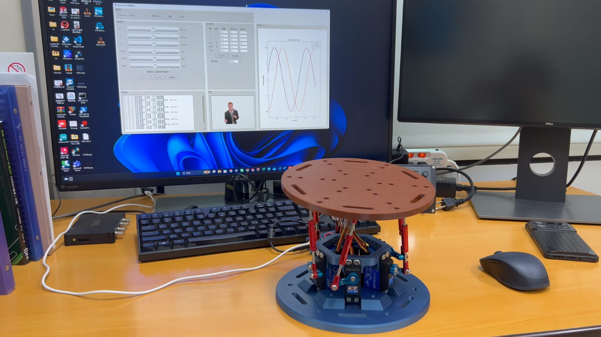
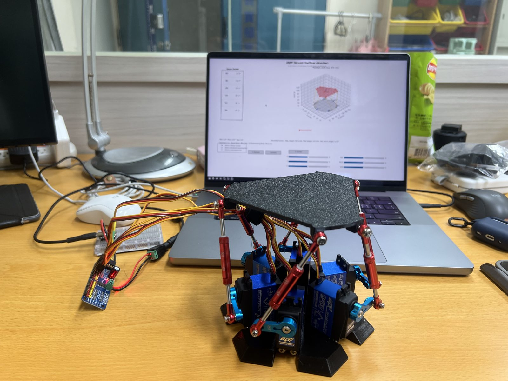
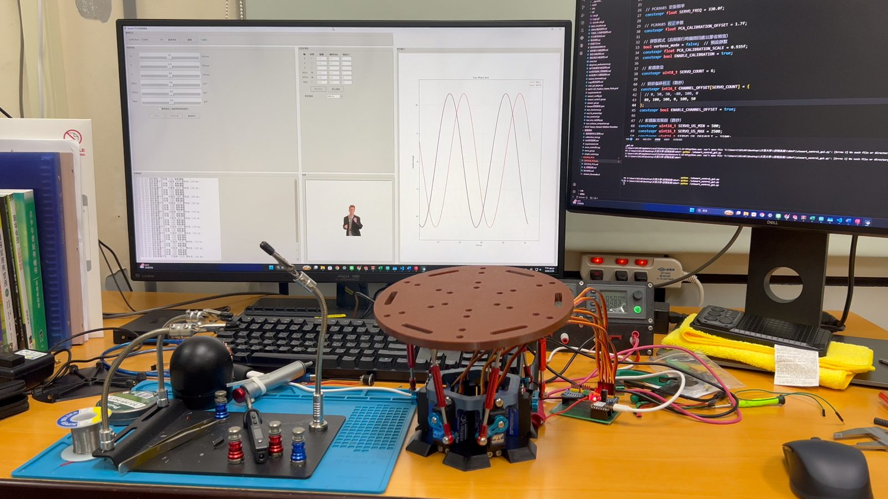
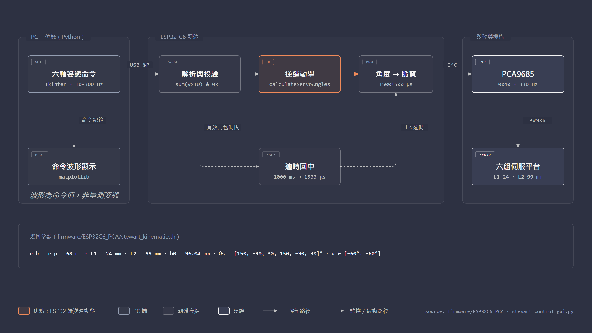
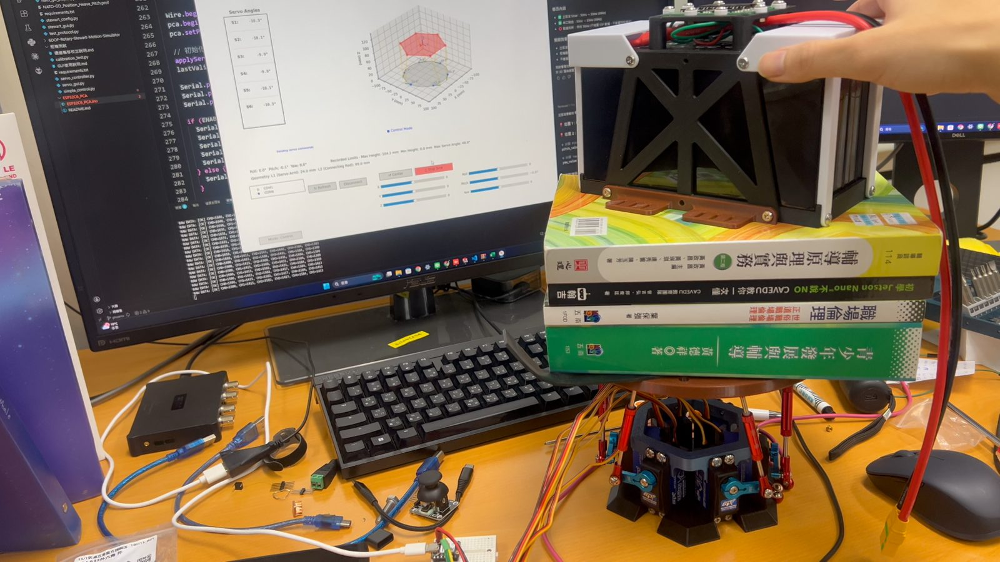

6-DOF Parallel Manipulator · ESP32-C6
小型六自由度
史都華平台
Mini Stewart Platform：機構小型化 × 嵌入式逆運動學 × 上位機控制
使用者在 Python 上位機設定平台的位置 \(X, Y, Z\) 與姿態 Roll／Pitch／Yaw，經 USB 序列傳到 ESP32-C6。ESP32-C6 即時計算逆運動學，再透過 PCA9685 輸出六路伺服 PWM，帶動六組「搖臂＋連桿」推動上平台。

$P 文字姿態封包專案定位與個人貢獻
機構小型化
以 knaufinator/6DOF-Rotary-Stewart-Motion-Simulator 為基礎，在 SolidWorks 重新設計小型平台、底座、控制盒與緊箍，提供 STL／STEP／原生檔。
控制系統與上位機
第二代將逆運動學從 PC 移到 ESP32-C6。上位機提供六軸滑桿、各軸正弦波測試（10–300 Hz 更新率）與命令波形顯示。
組裝與測試
完成兩代實體組裝、運動測試與負載情境展示。定量指標尚未量測，本站一律標示為待補。
01 · Mechanism
機構設計
採用旋轉式（rotary）Stewart 架構：六顆伺服各帶一支搖臂 \(L_1\)，再經球頭連桿 \(L_2\) 連到上平台。伺服只需轉動，不需要線性致動器，因此適合小型化與低成本實作。

組合件1.SLDASM）。韌體使用的幾何參數
| 符號 | 意義 | 數值 | 程式常數 |
|---|---|---|---|
| \(r_b, r_p\) | 底座／平台接點半徑 | 68 / 68 mm | BASE_RADIUS, PLATFORM_RADIUS |
| \(L_1\) | 伺服搖臂長 | 24 mm | SERVO_ARM_LENGTH |
| \(L_2\) | 連桿長 | 99 mm | CONNECTING_ARM_LENGTH |
| \(h_0\) | 中立平台高度 | 96.04 mm | PLATFORM_HEIGHT |
| \(\beta_i\) | 搖臂轉動平面方向 | 150, −90, 30, 150, −90, 30° | THETA_S[6] |
| \(\alpha_i\) | 伺服角限制 | −60° … +60° | SERVO_MIN/MAX_ANGLE |
來源：stewart_kinematics.h L17–54。這些是程式採用的設定值，不是對實體零件逐一量測的結果。
為什麼是 96.04 mm？令搖臂水平（\(\alpha=0\)）且連桿垂直，可得 \(h_0=\sqrt{L_2^2-L_1^2}\) \(=\sqrt{99^2-24^2}\) \(\approx 96.05\) mm。用 \(h_0=96.04\) 代入韌體公式，中立姿態算出的六軸角度約為 \(-0.02^\circ\)，也就是搖臂幾乎水平，兩側都保有最大的轉動餘量。舊版設定為 91.92 mm。
兩代實機比較

legacy/binary_pca9685/）。
firmware/ESP32C6_PCA/。| 項目 | 初代／相容版（legacy） | 二代／主版本 |
|---|---|---|
| 逆運動學位置 | PC（Python） | ESP32-C6 韌體 |
| 通訊 | 115200 baud、12-byte 大端序角度封包，無校驗 | 460800 baud、$P,x,y,z,roll,pitch,yaw,CS 文字封包＋checksum |
| PWM 頻率 | 50 Hz | 330 Hz |
| 中立高度設定 | 91.92 mm | 96.04 mm |
| 上位機 | 3D 視覺化（6dof_visualizer.py） | 六軸滑桿＋正弦測試＋命令波形（stewart_control_gui.py） |
CAD 檔案
完整模型位於儲存庫的 models/ 目錄：
- STL（4 件，可直接切片列印）：大平台、底座、控制盒、緊箍。
- STEP：
組合件1.STEP，可在其他 CAD 軟體開啟。 - SolidWorks：
組合件1.SLDASM與 10 個零件（平台、搖臂、球頭、連桿、舵機等）。
網頁版 3D CAD 檢視器 待補：之後可把 STL 轉成 glTF 放進網站。
02 · Inverse Kinematics
逆運動學
逆運動學（IK）的任務是：已知平台要到達的姿態 \((x,y,z,\phi,\theta,\psi)\)，求出六顆伺服各自的轉角 \(\alpha_i\)。以下符號與韌體 calculateServoAngles() 逐項對應。
| 數學符號 | 韌體變數 | 說明 |
|---|---|---|
| \(\{B\}\) | — | 底座座標系：原點在底座中心、\(z\) 軸朝上，伺服軸心 \(z=0\) |
| \(\{P\}\) | — | 平台座標系：原點在平台中心，中立時位於 \((0,0,h_0)\) |
| \(\mathbf b_i\) | base_coords_x/y[i] | 第 \(i\) 顆伺服軸心（\(\{B\}\)） |
| \(\mathbf p_i\) | platform_coords_x/y[i] | 第 \(i\) 個平台球頭（\(\{P\}\)，\(z=0\)） |
| \(\mathbf T=(x,y,z)\) | position[0..2] | 平移命令（mm），\(z\) 為相對 \(h_0\) 的偏移 |
| \(\phi,\theta,\psi\) | roll, pitch, yaw | 旋轉命令（度，計算時轉為弧度） |
| \(\mathbf q_i\) | platform_pivot_x/y/z | 球頭在 \(\{B\}\) 中的位置 |
| \(l_i\) | delta_L2_virtual | 虛擬腿長 \(\lVert \mathbf b_i-\mathbf q_i\rVert\) |
| \(L_i, M_i, N_i\) | l, m, n | 求解 \(\alpha_i\) 的中間量 |
| \(\alpha_i\) | servo_angles[i] | 伺服角（度） |
-
接點幾何（開機時計算一次）
以
DX_MULTIPLIER\(d_i\)、OFFSET_ANGLE\(o_i\)、ANGLE_MULTIPLIER\(m_i\) 產生六個接點：$$\mathbf p_i=\begin{bmatrix} d_i\, r\cos\gamma_i \\ r\sin\gamma_i \\ 0\end{bmatrix},\qquad \gamma_i=o_i+m_i\,\theta_r,\qquad r=68\ \text{mm},\ \theta_r=30^\circ$$ stewart_kinematics.h L77–95；\(\mathbf b_i\) 以相同公式代入 \(\theta_p=30^\circ\)，因此 \(\mathbf b_i\) 與 \(\mathbf p_i\) 的 \(xy\) 座標相同代入
d = [1, 1, 1, −1, −1, −1]、o = [30°, 30°, −90°, −90°, 30°, 30°]、m = [1, −1, 1, 1, −1, 1]，六點依序為 (34, 58.9)、(68, 0)、(34, −58.9)、(−34, −58.9)、(−68, 0)、(−34, 58.9) mm，也就是半徑 68 mm、間隔 60° 的正六邊形頂點。 -
旋轉矩陣與平台姿態
平台接點的 \(z=0\)，所以只會用到旋轉矩陣的前兩欄。韌體使用 \(\mathbf R=\mathbf R_z(\psi)\mathbf R_y(\phi)\mathbf R_x(\theta)\)（\(c_\ast=\cos,\ s_\ast=\sin\)）：
$$\mathbf q_i = \mathbf R\,\mathbf p_i + \begin{bmatrix}x\\y\\h_0+z\end{bmatrix},\qquad \mathbf R\big|_{\text{col }1,2}=\begin{bmatrix} c_\phi c_\psi & s_\theta s_\phi c_\psi - c_\theta s_\psi\\ \color{#8fb4ea}{c_\phi}\, s_\psi & \color{#8fb4ea}{c_\theta}\, c_\psi + s_\phi s_\theta s_\psi\\ -s_\phi & s_\theta c_\phi \end{bmatrix}$$ stewart_kinematics.h L128–141（platform_pivot_x/y/z）由第三列可以看出，在這份實作中 roll \(\phi\) 對應繞 \(Y\) 軸（\(+x\) 側的點下降），pitch \(\theta\) 對應繞 \(X\) 軸。
已修正的錯誤：原始開源專案沿用下來的展開式，把第二列的兩個 cos 寫反了：
$$\mathbf R_{\text{old}}\big|_{\text{row }2}=\begin{bmatrix}\color{#f08a59}{c_\theta}\, s_\psi & \color{#f08a59}{c_\phi}\, c_\psi + s_\phi s_\theta s_\psi\end{bmatrix}$$這讓 \(\mathbf R_{\text{old}}^\mathsf T\mathbf R_{\text{old}}\ne\mathbf I\)：只有 pitch 時，球頭的 \(y\) 座標沒有隨傾斜內縮，計算中的平台會被拉長，15° 時接點半徑從 68 mm 變成約 69.7 mm；只有 roll 時則在 \(y\) 方向被壓扁。依韌體參數計算，修正前後的伺服角差異在單軸 5°／10°／15° 時約 0.07°／0.30°／0.7°；中立、平移與純 yaw 不受影響。韌體與舊版 Python 已改為上方的標準形式。修正後的實機效果待補，需要重新燒錄並量測。下方 3D 模擬可以切換到修正前的公式比較。
-
腿向量與虛擬腿長
$$\Delta\mathbf l_i=\mathbf b_i-\mathbf q_i,\qquad l_i=\lVert\Delta\mathbf l_i\rVert,\qquad \text{若 } |l_i-L_1|>L_2 \Rightarrow \text{不可達}$$ L144–158 -
由腿長求伺服角
搖臂末端 \(\mathbf a_i=\mathbf b_i+L_1(\cos\alpha_i\cos\beta_i,\ \cos\alpha_i\sin\beta_i,\ \sin\alpha_i)\) 與球頭的距離必須等於連桿長 \(L_2\)，即 \(\lVert\mathbf q_i-\mathbf a_i\rVert=L_2\)。展開後可整理成 \(L_i=M_i\sin\alpha_i+N_i\cos\alpha_i\)：
$$\begin{aligned} L_i&=l_i^2-(L_2^2-L_1^2)\\ M_i&=2L_1\,q_{iz}\\ N_i&=2L_1\big[\cos\beta_i\,(q_{ix}-b_{ix})+\sin\beta_i\,(q_{iy}-b_{iy})\big]\\[4pt] \alpha_i&=\arcsin\!\frac{L_i}{\sqrt{M_i^2+N_i^2}}-\operatorname{atan2}(N_i,M_i) \end{aligned}$$ L161–183；可行條件：\(M_i^2+N_i^2>0\)、\(|L_i/\sqrt{M_i^2+N_i^2}|\le 1\)、\(-60^\circ\le\alpha_i\le 60^\circ\)（L172–189）六支腿只要有任一支不滿足條件，函式就回傳
false，韌體會丟棄整個封包，維持上一個有效輸出。 -
伺服角 → PWM 計數值
CH0、CH2、CH4 的安裝方向相反，先將角度變號 \(\alpha_i'=\pm\alpha_i\)，再映射到脈寬、加上各通道偏移 \(o_i\) 與 PCA9685 校正：
$$u_i=1500+\Big\lfloor\frac{\alpha_i'}{60}\cdot 500\Big\rfloor\ \mu\text{s},\qquad \tilde u_i=\frac{u_i+o_i+1.7}{0.935},\qquad \text{count}_i=\operatorname{round}\!\Big(\tilde u_i\cdot\frac{4096}{10^6/330}\Big)$$ ESP32C6_PCA.ino L112–160；\(o=[80,100,100,0,100,50]\ \mu\text{s}\)
六自由度互動模擬 模擬
拖曳滑桿設定姿態，網頁會即時執行與韌體相同的 IK（kinematics.js），畫出搖臂、連桿與平台，並列出伺服角、PWM 與送給 ESP32 的封包字串。滑桿範圍與上位機相同（±50 mm、±30°）。表中「連桿長」是用 IK 結果反推的檢查值，應為 99 mm。
| 伺服 | α | 脈寬 | PCA 計數 | 連桿長 |
|---|
模擬只呈現幾何，未包含伺服動態、齒隙、連桿干涉與負載。脈寬欄是映射前的 \(u_i\)，PCA 計數已含反轉、通道偏移與校正。
03 · Control Architecture
控制架構
主版本把「姿態命令」與「致動器計算」拆開：PC 只送六個浮點數，ESP32-C6 自己做校驗、逆運動學、可行性檢查與失效保護。這是開迴路控制，系統沒有姿態感測回授。



互動式架構圖（Archify）
通訊協定
$P,x,y,z,roll,pitch,yaw,checksum\n # 位置 mm、旋轉 degree，數值格式化為小數兩位
checksum = ( Σ trunc(vᵢ × 10) ) & 0xFF # 上位機 calculate_checksum() ↔ 韌體 parsePositionPacket()
$V,0 / $V,1 # 關閉／開啟詳細回應安全與健壯性設計（程式中已實作）
| 機制 | 行為 | 位置 |
|---|---|---|
| Checksum 驗證 | 不符合就丟棄封包並回報 [ERR] | ino L178–196 |
| IK 可行性 | 腿長、asin 定義域、±60° 任一失敗即丟棄；累計 ikFailCount | kinematics.h L156–189 |
| 封包組裝逾時 | 以 $ 起頭後 100 ms 未收到換行，就清空緩衝 | ino L234–238 |
| 緩衝溢位 | 超過 128 bytes 重新同步 | ino L304–310 |
| 訊號逾時回中 | 1 秒內沒有有效封包，六路回到 1500 µs | ino L314–332 |
| 脈寬夾限 | 角度夾在 ±60°，脈寬夾在 500–2500 µs | ino L106–150 |
上位機的「緊急停止」按鈕會停止測試並送出回中心命令，不會切斷伺服電源。實際的斷電保護需要硬體開關。
04 · Results
實驗成果
本節分成三類：實機紀錄實測、由公式算出的結果模擬，以及尚未量測的項目待補。目前沒有任何感測器量到的姿態數據，所以不提出精度、承載或頻寬等定量結論。
運行影片 實測
此影片為 HEVC（H.265）編碼，目前的瀏覽器可能無法播放，請 下載 MP4 觀看。
此影片為 HEVC（H.265）編碼，目前的瀏覽器可能無法播放，請 下載 MP4 觀看。
負載情境 實測

負載測試的量測紀錄
- 負載質量（kg）與重心位置
- 測試姿態、運動幅度、持續時間
- 伺服電流／溫度、是否失步
- 有載與無載的姿態誤差
補上數據前，不據此宣稱最大承載量。
正弦命令下的伺服角 模擬
上位機的正弦測試會以 \(A\sin(2\pi f t)\) 覆寫所選軸的命令。下圖把同樣的命令丟進韌體 IK，畫出六顆伺服應有的角度。這張圖是計算結果，不是量測曲線。
以表格檢視（每 1/8 週期取一點）
| t (s) | 命令 | S0 | S1 | S2 | S3 | S4 | S5 |
|---|
單軸可行範圍 模擬
每次只動一個軸、其餘軸保持 0，以二分搜尋找出韌體 IK 仍可行的邊界。這是純幾何上限，沒有考慮連桿干涉、球頭角度與伺服扭矩。
可以看到上位機滑桿範圍（Z ±50 mm、Roll／Pitch ±30°）比 IK 可行範圍大。超出可行範圍的命令會被韌體拒絕，平台停在上一個有效姿態。這也說明滑桿範圍可以依計算結果收斂。
| 軸 | 負向極限 | 正向極限 | 上位機滑桿範圍 |
|---|
軟體驗證（儲存庫已有紀錄）
主版本 程式碼對照
- 上位機與韌體的 460800 baud、
$P六軸順序、degree 單位、換行分隔與$V,0指令已逐項對照。 - 上位機隱藏視窗初始化檢查通過。
- 這些檢查不包含 ESP32 編譯、燒錄與硬體串列收發。
舊版相容面板 單元測試 4/4
- 封包解碼的量化誤差在一個編碼步距內；拒絕不可達姿態與 NaN／Inf。
- 只重送最新目標，可正常停止；串列短寫入時會停止傳送。
- 使用假串列埠，不驅動硬體；相容面板尚未上實機驗證。
待補的實驗曲線 待補
命令 vs. 實際姿態
- 平台上固定 IMU（如 BNO085），記錄 roll／pitch／yaw
- 與上位機命令同步時間軸，計算 RMSE 與相位落後
頻率響應
- 掃頻 0.1–3 Hz 的正弦命令
- 畫出振幅比與相位的 Bode 圖，找出 −3 dB 頻寬
通訊與 IK 效能
- 記錄韌體每 5 秒輸出的
[ESP32-PERF]（實際封包率、IK 失敗數） - 量測單次 IK 計算時間（µs）
05 · Engineering Challenges
技術挑戰
以下每一項都能在原始碼中找到對應的實作。
1｜IK 該放在 PC 還是微控制器？
問題
初代由 PC 算出六個角度再傳二進位封包，沒有標頭也沒有校驗。PC 端的時序抖動或封包錯位會直接變成伺服角度的錯誤。
做法
二代改送姿態（6 個浮點數＋checksum），由 ESP32-C6 用單精度浮點計算 IK。韌體可以自己拒絕不可行的姿態，上位機只負責產生命令與顯示波形。
2｜伺服安裝方向與個體差異
問題
六顆伺服兩兩對稱安裝，轉向不一致；同一個脈寬下，各顆伺服的中位也不完全相同。
做法
韌體以 INVERT_SERVO 反轉 CH0／2／4，CHANNEL_OFFSET 逐通道補償 80／100／100／0／100／50 µs，再用 (us+1.7)/0.935 補償 PCA9685 的時脈偏差。這些數值只適用於原實機。
3｜選擇中立高度，保留最大行程
問題
中立高度設得太高或太低，搖臂在中位就已偏向一側，某些方向的行程會提早用完。
做法
由 \(h_0=\sqrt{L_2^2-L_1^2}\) 讓搖臂在中位時保持水平，從舊版的 91.92 mm 改為 96.04 mm，中位角約 \(-0.02^\circ\)。
4｜序列通訊的健壯性
問題
在 460800 baud、高更新率下，可能出現半包、雜訊或上位機中斷，平台必須停在可預期的狀態。
做法
以 $ 起頭、換行結尾分框，加上 100 ms 組包逾時、128 B 溢位重置、checksum、IK 驗證，以及 1 s 無有效封包自動回中。另外每 5 秒統計一次封包率與 IK 失敗數。
5｜找出並修正沿用程式中的旋轉矩陣錯誤
發現
把韌體公式和標準 ZYX 逐項比對、檢查矩陣是否正交後，發現沿用的展開式在第二列把 \(c_\phi\) 與 \(c_\theta\) 寫反，計算中的平台不再是剛體。另外 roll／pitch 實際對應 \(Y\)／\(X\) 軸，跟一般航太慣例相反。
處理
量化影響（10° 單軸約 0.3°、15° 約 0.7°，見逆運動學），並在韌體與舊版 Python 改為標準 ZYX。修正後仍需燒錄並用 IMU 實測，確認定位是否改善待補。
06 · Future Work
未來研究方向
目前系統完成了「命令 → IK → 致動」的開迴路鏈路。下一步是把它變成可以量化評估的實驗平台。
1. 姿態量測與閉迴路
加裝 IMU 或用視覺標記追蹤平台姿態，先量化開迴路誤差，再評估 PID 或前饋補償的閉迴路控制。
2. 運動學模型校正
以 IMU 驗證旋轉矩陣修正，並統一 roll／pitch 的軸向定義；以最小平方法辨識實際的接點位置、連桿長與伺服零點，取代手動調整的通道偏移。
3. 工作空間與奇異性分析
從單軸擴展到六維工作空間取樣；加入球頭角度與連桿干涉限制，用條件數評估靠近奇異點的區域。
4. 正運動學與軌跡規劃
以 Newton–Raphson 求數值正運動學，從伺服角還原平台姿態；在韌體端加入速度與加速度限制，讓軌跡平滑。
5. 動態與頻寬特性
掃頻量測 Bode 圖、建立伺服的一階或二階模型，探討負載對頻寬與穩定性的影響。
6. 應用延伸
小型運動模擬座椅原型、球平衡（ball-on-plate）控制實驗，或作為相機穩定與感測器標定的平台。